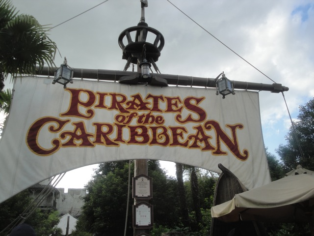
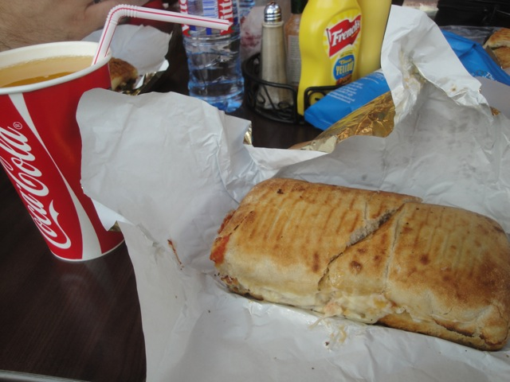

Even if you are not a roller coaster enthusiast and don't know 99% of all the parks that I have reviewed, you definetly know about Disneyland Paris. Or at least, I hope you do. At the VERY least, you know about the two American Disney Resorts. The Disneyland Resort in California and the Walt Disney World Resort in Florida. But hopefully, you also know about Disneyland Paris, or Euro Disney, if you still want to call it that. Disneyland Paris tends to be a joke after the parks history of having trouble when it first opened. And while that may have been true, it's certainly not true now. Disneyland Paris is doing just fine, and has actually added some really cool stuff since I last visited. Now there's also a reputation with the park that it's much ruder than the American Disney Parks because the French are rude and snooty to Americans and blah blah blah stereotype. This one...I can't really defend. Disneyland Paris did seem to be the least friendly of the three Disney Resorts I've visited. Now granted, it's still pretty good. The operations at Disneyland Paris are a million times better than most theme parks. But compared to the other two Disney Parks and a couple of the other really highly ranked parks, yeah. Disneyland Paris didn't seem to be in that same ballpark. Now don't get me wrong, I still really liked Disneyland Paris. It's still a really great theme park. I mean, just look at it!!! It is EASILY the prettiest of the three Disney Resorts I have visited so far. So don't be scared off. Definetly come on over and take a look at Disneyland Paris.
Here are the reviews of all the Flat Rides at Disneyland Paris. There's Tower of Terror, but there's a seperate review of that right up there. Aside from that, Disneyland Paris is doing a pretty poor job in the flat ride department because just like every other Disney Park, Flat Rides are the parks one weakness. Disneyland Paris only has a few flat rides. Astro Orbiter, the Mad Hatter Tea Party, and King Arthur's Carousel. These are all very standard flat rides and staples at all of the Disney Parks. Well, they're not staples, but they're there. But none of them are really that great. Even with all my free time, I didn't ride any of those rides. Why? Because SNORE. At Disney Studios Park, there's an Aladdin's Magic Carpet ride, which is the exact same thing as the Astro Orbitor. And then, all the other Flat Rides are in the Toy Story area. There's a Parachute Drop, and a kiddy Musical Express. Both seem like just typical kids rides. They're boring, they're not worth discussing. We're at Disney. There's a ton more to talk about. Moving on.
Dark Rides
Here are the reviews of all the Dark Rides at Disneyland Paris. This is an area where Disneyland Paris is doing a phenomenal job in (Because that's what they're known for). Now actually, the parks star dark ride is actually the one that they added since I last visited, which is based on Ratatoullie. Apparently, it's a trackless dark ride and has a bunch of great reviews. So that should be great. Now let's move onto the dark rides that I've actually ridden. Now let's discuss their version of Haunted Mansion, Phantom Manor. This is BY FAR, the best version of the Haunted Mansion that Disney has come up with (that I know of). You see, this one actually has a story of its very own. Basically, the Bride married the Miner who owns the Big Thunder Mountain mining company. But he becomes greedy and neglects his wife. So she commits suicide and haunts him. Yes. They connect the Haunted Mansion to Big Thunder Mountain. And it's a really cool story. WHY THE HELL DIDN'T THEY BASE THE HAUNTED MANSION MOVIE OFF THIS STORY!!!? SERIOUSLY!!! Then, there's their version of Pirates of the Carribean. And I will admit. This is the best of the three versions I've ridden so far. They have two drops, just like the California version. However, the two drops are not back to back. The first one is in the begenning, however, the second one is in the middle of the ride. So that spices up their version a little more. And of course, it's Pirates of the Carribean. It's going to be good. Up next, Star Tours. Now this is one of the few Disney Parks that have not upgraded their Star Tours ride to the new version. But I don't mind. Because it's the only version of the old one left, it's actually become unique. Hell, I got a little nostalgic riding it. I do prefer the new version, but if you enjoyed the old version, you'll enjoy taking another ride on it at Disneyland Paris. And then there's all the Fantasyland Dark Rides. They still have their Snow White ride, their Pinnochio ride, and we actually rode their version of It's a Small World. Yeah, it was annoying, but to be fair, I did enjoy seeing the French take on the United States. That was fun. And those are just the dark rides I rode. They also have a Buzz Lightyear shooting dark ride, which I always seem to skip whenever I'm at a Disney Park not in California. But hey. I've heard that this is actually one of the good versions. Oh, and they also have a Peter Pan there. Hey, it's just Peter Pan. But hey, as I've showed, Disneyland Paris has plenty of dark rides (It's Disney).
Connecting this ride to the Haunted Mansion is a MAJOR improvement.

Yo Ho! Yo Ho! A tourist's lifes for me!
Water Rides
This may be a shock, but there are actually no water rides at Disneyland Paris. NOTHING!!! I know some might say that the cold French Winters influence the lack of water rides. But hey, it snows in Tokyo, and Tokyo Disney still built a Splash Mountain. And from what I've seen, it even runs in the winter. Enough excuses!!! We want a French Splash Mountain!!!
Dining
Here are the reviews of all the Resteraunts at Disneyland Paris. Shockingly, the food I got at Disneyland Paris was not that good. Now granted, I was on a tight budget, so I was essentially, looking for the cheapest food avaliable. So yeah, I pretty much just got some of the typical amusement park crap from Tomorrowland. Though to be fair, they have that at all the Disney Parks. The only other place I ate was in Downtown Disney, or "The Village" as its called in Disneyland Paris was Earl de Sandwich. A nice little sandwich chain that's really good. And hey, they never had a pedophile as their spokesman. Just saying. =) But again, this is coming for a brokeass dude in his 20s who could barely afford to get here at all. =) I'm looking at all the other dining options for those who want to eat quality food when you visit the park, and yep. They seem to have every single kind of cuisine from what I can tell. So don't worry. You'll be fine. You have plenty of dining options to choose from at Disneyland Paris.

Aim higher.
Theming and Other Attractions
Here are the reviews of all the other stuff at Disneyland Paris. The theming everywhere is great. I know that may be obvious to you considering the fact that "IT'S DISNEY!!! OF COURSE IT'S GOING TO BE WELL THEMED YOU DUMBASS!!!". But even by Disney standards, the theming for Disneyland Paris is still phenomenal. Adventureland is great. Frontierland is great. Tomorrowland and Fantasyland are nice, but not the best. Disney Studios Park has a really nice atmosphere to it. It really does in a way, feel like a Movie Studio. And then there's the Main Street. HOLY CRAP!!! THAT LOOKS SO NICE!!! Out of all the Disney Parks I've been to, Disneyland Paris by far has the nicest castle. It just looks BEAUTIFUL. It has everything I like about the Disneyland Resort Castle, and everything that I like about the Walt Disney World Resort Castle. It just looks absolutely gorgeous. And hey. From what I can tell, you can go inside and do a whole Castle Tour. That looks really cool. And hey, there is the Dragon underneath, that's really cool. I definetly enjoyed that. And with that said, let's move on. And with that said, let's move onto the other attractions in the park. In Disney Studios, oh you better believe that there are a TON of attractions. They've got a Tram Tour just like that at Universal Studios Hollywood. I didn't do it, but I'm assuming they'll show you a couple fake sets, showcasing a bunch of props from the live action Disney films. They also have a version of Lights Motors Action! Now, I've seen the Florida version, and that is currently, my favorite show ever. So why didn't I see this version? Well, first off...time. I just didn't have the time. But to be fair, I had heard that they changed the show to feature Lightning McQueen and Mater from Cars. Great, characters from my least favorite Pixar Film (not including crappy sequels and prequels) are now infiltrating my favorite show. And not in a good way. Look, there are good places for the characters. This is not that place. And then, they have the Animation Studio in Disney Studios. And since I am both a big film geek, a total disney Nut, and in Disneyland Paris, I had to check it out. It was cool and I definetly enjoyed it. But there's no denying it. I definetly prefer the California version on Animations. Over in the Disneyland Park, one cool thing they have is Alice's Curious Labyrinth. This is basically a maze throughout Fantasyland that is just a ton of fun. It has a ton of cool stuff as a ginat cheshire cat, lots of effects from the movie, A Giant Queen of Hearts that pops out, fun water effects, and even a slide. But the slide was closed when I went for obvious reasons. There's also a lot of walk throughs. There's one for 2,000 Leagues Under the Sea as well as one for Aladdin. And finally, we come to the park's Fireworks, Disney Dreams. They were just FANTASTIC!!! For the most part, they were typical Disney Fireworks, but even outside of the typical great things that Disney does. First off, they mix the technology with World of Color and incorporate that into the show. No, they don't have any water fountains. But they do project silhouettes onto the castle and really make it into a show, it's very visual, just like how World of Color projects images onto those water fountains. Oh, and this show has no idea if it wants to be in English or in French, so it alternates between the two languages.
These fireworks kick ass.
In Conclusion
Disneyland Paris may not be quite as good as it's two American Counterparts, but Disneyland Paris is still a very fun park. It is a very beautiful park with not only great theming in all of the lands with a great Frontierland and a lot of cool stuff in Disney Studios, but also the best castle out of all the Disney Parks. It still does have a couple things that it needs to work on, mainly the operations which while they aren't horrible or anything, don't quite seem to meet up to the standards of Disney Magic that is seen in both the Disneyland Resort and the Walt Disney World Resort. But don't let that discourage you from visiting. Trust me, it's still far better than most parks out there. It still has a very nice ride collection with some great theming, it still has a lot of fun stuff to do including some stuff that is completely unique to Disneyland Paris, as well as great rides such as Rock 'N' Roller Coaster, Big Thunder Mountain, Phantom Manor, and more. Definetly make sure you give it a visit when you go to Paris.
Enthusiast FAQs.
*Are there kiddy coaster restrictions? - Casey Jr. is NOT a credit!!! But for you whores that count Psuedo-Credits, there are no restrictions for it.
Tips
*Get to the park early, and then RUN LIKE HELL TO GET FASTPASSES!!!!!!!
*Disneyland Paris offers free fastpasses. USE THEM!!!!!!!!!!!
*Beware of the line for Crush's Coaster since it has no Fastpass or Single Riders Line.
*If you only want to do the major rides, Then you only need one day, If you want to do all the rides in both Disneyland and Disney Studios, spend two days there.